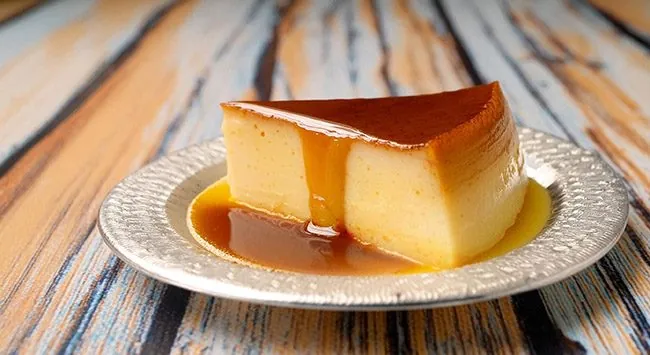

Receita de Pudim

Ingredientes
- 1 lata de leite condensado
- 1 lata de Leite Integral (utilize a mesma lata do Leite Condensado como medida)
- 4 ovos grandes em temperatura ambiente
- 1 colher de sopa de Essência de Baunilha
- 1/2 xícara (chá) de açúcar
Modo de preparo
- No liquidificador, bata o Leite Condensado, o Leite Integral, os ovos e a Essência de Baunilha até obter um creme homogêneo.
- Em uma panela média, coloque o açúcar e leve ao fogo baixo, mexendo sem parar, até obter um caramelo dourado. Despeje o caramelo em uma forma redonda com furo no centro (com capacidade de 1 litro).
- Despeje o creme do liquidificador sobre o caramelo na forma. Cubra com papel alumínio e leve para assar em banho-maria em forno pré-aquecido a 180°C por 1 hora e 30 minutos ou até dourar e firmar.
- Retire o pudim do forno e deixe esfriar completamente antes de desenformar. Para desenformar, passe uma faca nas bordas da forma e inverta sobre um prato.
- Sirva gelado.